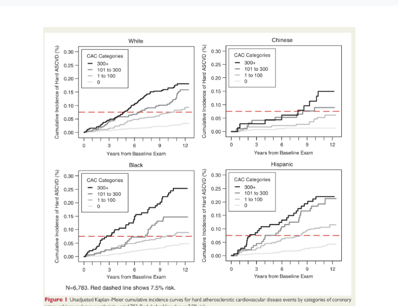

<section class="slide" data-slide-id="S10" style="background: var(--bg);">
  <div class="label-gold" style="margin-bottom: 0.6vw;">APLICAÇÃO — CAC=0</div>

  <h2 style="margin-bottom: 0.45vw;">CAC=0: por quanto tempo rebaixa risco?</h2>
  <div class="lead" style="max-width: 92%;">
    <b>“Warranty period”</b> não é imunidade: é a <b>janela</b> em que o risco tende a permanecer baixo.
  </div>

  <div style="display:grid; grid-template-columns: 1.55fr 1fr; gap: 1.8vw; margin-top: 1.25vw;">

    <!-- Left: figure -->
    <div class="card" style="padding: 1.05vw 1.05vw 0.95vw 1.05vw;">
      <div style="font-size: 0.86vw; letter-spacing: 0.08em; text-transform: uppercase; color: var(--muted); font-weight: 800; margin-bottom: 0.55vw;">
        MESA • eventos ao longo do tempo
      </div>

      <div style="border: 1px solid var(--border); border-radius: 1vw; overflow: hidden; background: #fff; height: 26.2vw;">
        
      </div>

      <div class="ref" style="margin-top: 0.7vw; font-size: 0.80vw; line-height: 1.25;">
        Budoff MJ et al. <i>Eur Heart J</i> 2018. &nbsp;•&nbsp; Dzaye O et al. <i>JACC Img</i> 2021.
      </div>
    </div>

    <!-- Right: interpretation -->
    <div style="display:flex; flex-direction:column; gap: 1.2vw;">

      <div class="card" style="padding: 1.35vw; border-left: 6px solid var(--teal);">
        <div class="small-title">Leitura com lente GRADE</div>

        <div style="margin-top: 0.9vw; font-size: 1.08vw; line-height: 1.35;">
          <div style="display:flex; gap: 0.6vw; align-items:flex-start; margin-bottom: 0.55vw;">
            <span style="color: var(--teal); font-weight: 900;">+1</span>
            <span><b>Gradiente</b>: risco sobe conforme o CAC aumenta (dose–resposta).</span>
          </div>
          <div style="display:flex; gap: 0.6vw; align-items:flex-start;">
            <span class="iconCircle iconCircle--gold">!</span>
            <span>Coorte → decisão terapêutica: atenção a <b>indireção</b> e <b>confusão residual</b>.</span>
          </div>
        </div>

        <div class="grade-final" style="margin-top: 0.85vw;">
          <div>certeza global</div>
          <div class="grade-dots"><span class="dot">⊕</span><span class="dot">⊕</span><span class="dot">⊕</span><span class="dot">◯</span></div>
          <div class="grade-label">MODERADA</div>
        </div>
      </div>

      <div class="card" style="padding: 1.35vw; border-left: 6px solid var(--gold);">
        <div class="small-title">Janela prática (quando repetir CAC)</div>

        <div style="margin-top: 0.95vw; display:grid; gap: 0.85vw;">
          <div style="display:flex; justify-content:space-between; align-items:center; padding: 0.85vw 1.0vw; border-radius: 1vw; background: rgba(11,20,37,.03); border: 1px solid var(--border);">
            <div style="font-size: 1.06vw;"><b>Risco intermediário</b></div>
            <div style="font-size: 1.12vw; font-weight: 900; color: var(--ink);">3–7 anos</div>
          </div>

          <div style="display:flex; justify-content:space-between; align-items:center; padding: 0.85vw 1.0vw; border-radius: 1vw; background: rgba(11,20,37,.03); border: 1px solid var(--border);">
            <div style="font-size: 1.06vw;"><b>Risco baixo</b></div>
            <div style="font-size: 1.12vw; font-weight: 900; color: var(--ink);">5–10 anos</div>
          </div>
        </div>

        <div class="note" style="margin-top: 0.85vw;">
          <p><b>Take‑home:</b> CAC=0 orienta <b>timing</b> de reavaliação — não “alta”.</p>
        </div>
      </div>

    </div>
  </div>
</section>
